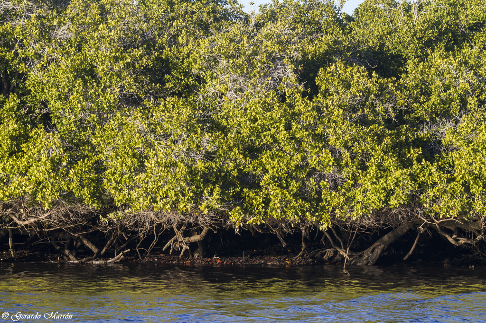
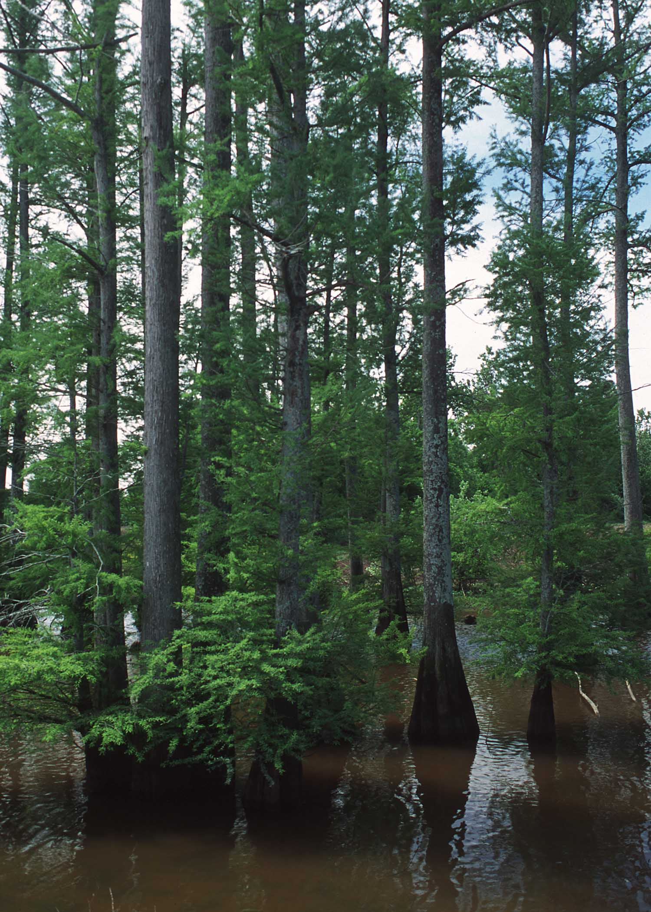
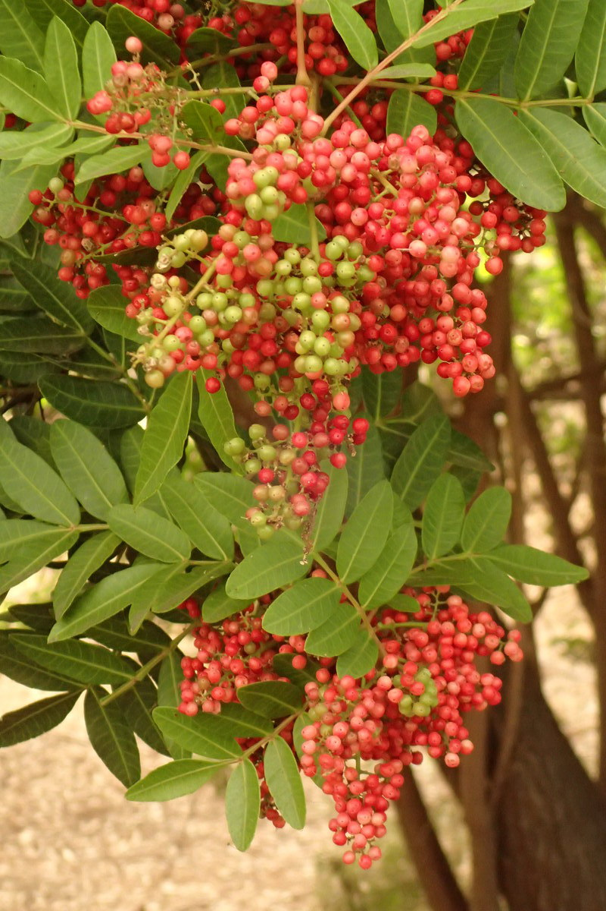
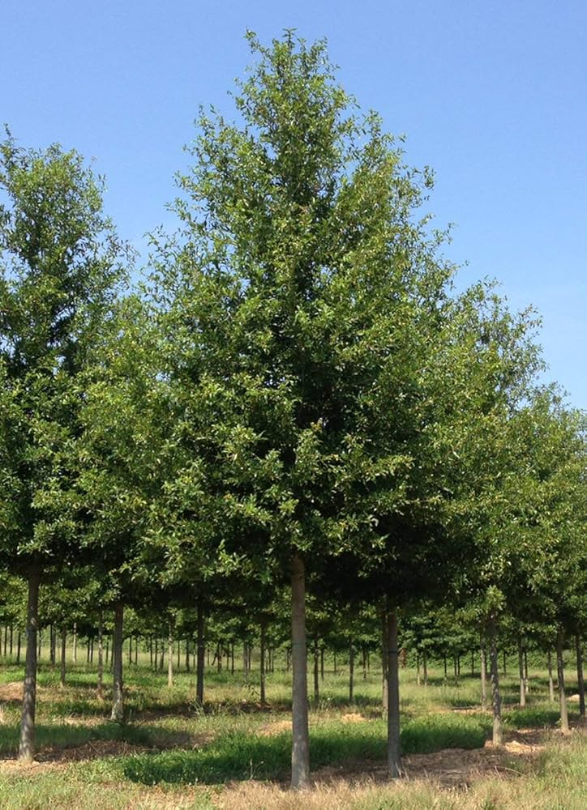
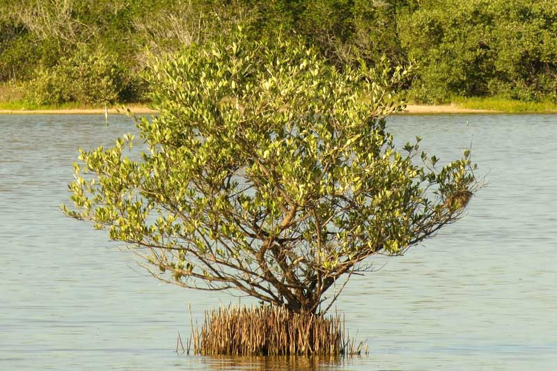
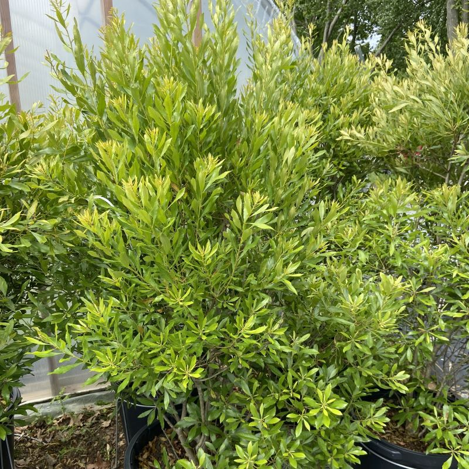
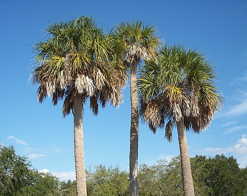
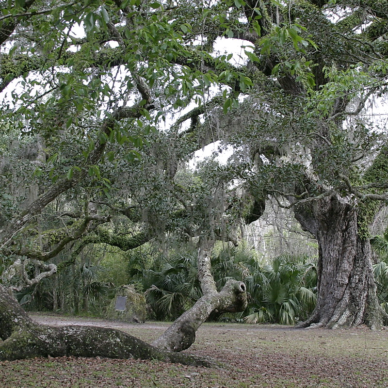
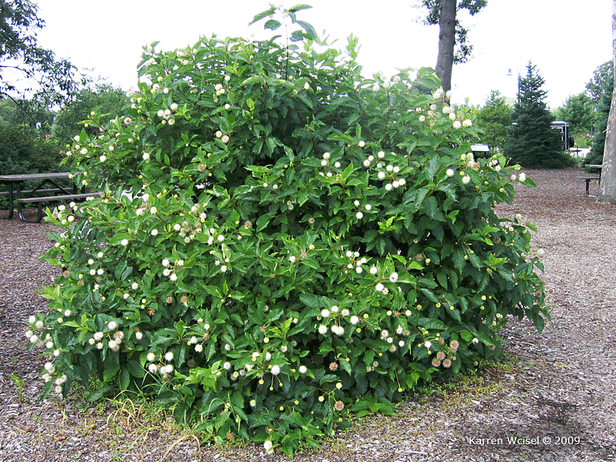

Current Koppen Climate Zone: Cfa
Humid Subtropical (Cfa) - Warm summers, mild winters, and rainfall distributed throughout the year.
Projected Koppen Climate Zone in 2100: Cfa
Humid Subtropical (Cfa) - Warm summers, mild winters, and rainfall distributed throughout the year.
2023 Population: 2,283,144.
Average SUHI daytime: 2.51°C
Average SUHI nighttime: 0.68°C
Climate in 2100 Similar to current Tampa
Urban Trees Common in Tampa / Cfa

Laguncularia racemosa (White mangrove)

Taxodium spp. (Bald cypress)

Schinus terebinthifolia (Brazilian pepper tree)

Quercus laurifolia (Laurel oak)

Avicennia germinans (Black mangrove)

Myrica cerifera (Wax myrtle)

Sabal palmetto (Cabbage palm)

Nyssa sylvatica var. biflora (Swamp tupelo)

Quercus virginiana (Southern live oak)

Cephalanthus occidentalis (Buttonbush)